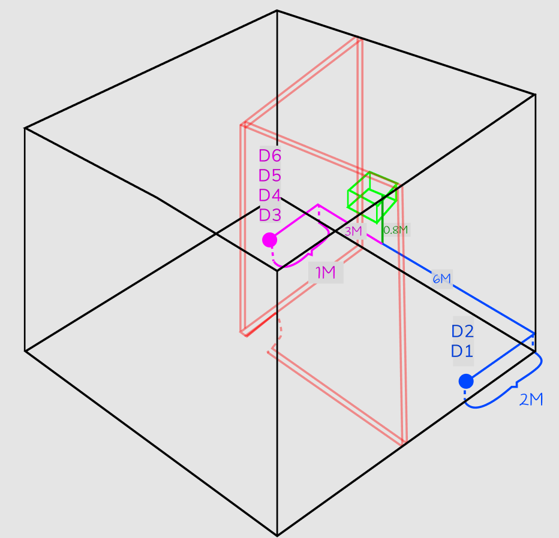

Taller: Diseño e instalación de cableado de red de datos.
Juan Pablo Morales
Jhonatan Camacho
Enmanuel Toro
Juan Pablo Morales
Jhonatan Camacho
Enmanuel Toro
La red inicia en la esquina nororiental de la oficina de gerencia, a 1.6 metros del suelo, lugar donde se instala el gabinete. Del gabinete sale un a canaleta que baja hasta llegar a 80 cm del suelo, a partir de este punto se instala una Derivacion de canaleta en T y de ahi surgen, el ramal uno , el cual transporta dos puntos de red hacia el sur de la oficina, y el ramal dos , el cual transporta cuatro puntos de red hacia el norte
El ramal uno que se dirige hacia la pared sur donde se instala un ángulo interior desviando la direccion del ramal del oriente al occidente, finalmente, desde este punto el ramal se extiende hasta tres metros y se instalan un face's plate doble a dos metros, para los puntos de red D2 y D1 respectivamente.
El ramal dos se extiende por la pared tres metros hacia el norte, donde se instala un ángulo interior desviando la direccion del ramal del oriente al occidente, finalmente, desde este punto el ramal se extiende hasta un metro y se instala un face plate cuadruple para los puntos de red D3, D4, D5 y D6.
Se conserva la actual red eléctrica, por lo tanto el presente proyecto no incluye cableado eléctrico.